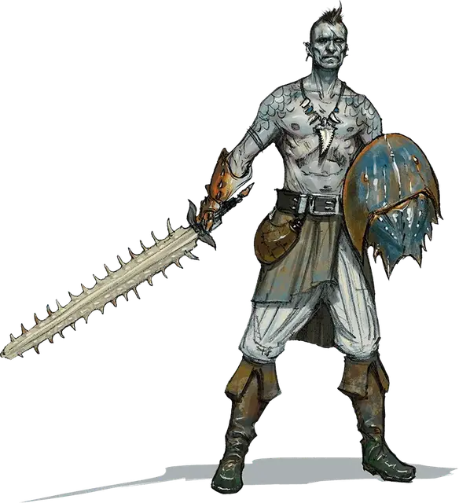

Рыцарь Тёмного Прилива
Dark Tide Knight
Средний Гуманоид (Человек), законно-злой

Класс Доспеха 13
Хиты 58 (9к8 + 18)
Скорость 30 футов
| мод | спас | ||
|---|---|---|---|
| СИЛ | 17 | +3 | +3 |
| ЛОВ | 16 | +3 | +3 |
| ТЕЛ | 14 | +2 | +2 |
| мод | спас | ||
|---|---|---|---|
| ИНТ | 10 | +0 | +0 |
| МДР | 11 | +0 | +0 |
| ХАР | 11 | +0 | +0 |
Навыки Атлетика +7, Скрытность +7
Чувства пассивное Восприятие 10
Языки Общий
Опасность 3 (700 опыта)
Бонус мастерства +2
Особенности
Скрытая атака. Рыцарь наносит дополнительные 7 (2к6) урона, когда попадает по цели оружием и обладает преимуществом на атаку, или в 5 футах от цели находится союзник цели, который не находится без сознания и рыцарь при этом не имеет помехи на бросок атаки.
Связь с верховым животным. Рыцарь магически связан с животным с врождённой скоростью плавания, которое было обучено нести всадника. Пока рыцарь сидит верхом на таком скакуне, он получает все чувства животного и может дышать под водой. Связанное животное подчиняется приказам рыцаря. Если животное умирает, рыцарь может обучить нового скакуна, получая те же преимущества. Этот процесс занимает месяц.
Действия
Мультиатака. Рыцарь делает две атаки Коротким мечом.
Короткий меч. Рукопашная атака оружием: +5 к попаданию, досягаемость 5 футов, одна цель. Попадание: колющий урон 6 (1к6 + 3).
Длинное копьё. Рукопашная атака оружием: +5 к попаданию, досягаемость 10 футов, одна цель. Попадание: колющий урон 9 (1к12 + 3).
Реакции
Невероятное уклонение. Когда нападающий, которого рыцарь может видеть, попадает по нему атакой, он может реакцией уменьшить вдвое урон, причиняемый ему этой атакой.
Описание
Рыцари Тёмного Прилива — это элитные воины культа Сокрушительной Волны. Благодаря дарованной Ольгидрой тёмной силе они могут ездить верхом на морских существах, которые обычно к этому не приспособлены. Они даже способны дышать под водой и разделяют общее восприятие со своими верховыми животными. Рыцари предпочитают сражаться в воде или около неё, так как им не нравится надолго покидать своих скакунов, но при необходимости они с не меньшей яростью будут преследовать своего противника и на суше.
В отличие от рыцарей других культов, рыцари Тёмного Прилива не носят тяжёлую броню, рассчитывая достичь победы благодаря скорости и свирепости своих атак.